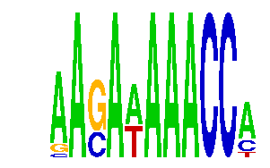

family_1 |
|---|
|  |
| Download PWM |
| Download instances (motifs) |
| Show motif distribution |
Query_ID | Query_Consensus | Subject_Name | Source_DB | Subject_ID | Length | Orientation | Offset | Divergence | Overlap | Subject_Consensus |
|---|
Sequence | Start_position (from start) | Start_position (from end) | Average conservation | Best conservation score | Instance_with_best_CS | Best_Z-score | Instance_with_best_ZS | Strand |
|---|---|---|---|---|---|---|---|---|
| chr2:77009423-77010423 | 270 | 281 | 0.0277273 | 0.067 | AASAWAAACC. | 15.405166 | AASAWAAACC. | 1 |
| chr17:71370087-71371087 | 250 | 261 | 0.0249091 | 0.033 | AASAWAAACC. | 15.405166 | AASAWAAACC. | 1 |
| chr14:55584204-55585204 | 949 | 960 | 0.00481818 | 0.029 | AASAWAAACC. | 15.405166 | .ASAWAAACCA | 1 |
| chr17:26987569-26988569 | 588 | 599 | 0.0116364 | 0.016 | AASAWAAACC. | 15.405166 | .ASAWAAACCA | 1 |
| chr10:30557934-30559899 | 199 | 210 | 0.001 | 0.005 | AASAWAAACC. | 15.405166 | .ASAWAAACCA | 1 |
| chr19:36193489-36194489 | 683 | 694 | 0.022 | 0.121 | AASAWAAACC. | 15.405166 | .ASAWAAACCA | 1 |
| chr1:58346510-58347510 | 567 | 578 | 0.00536364 | 0.021 | AASAWAAACC. | 15.405166 | AASAWAAACC. | 1 |
| chr18:10787047-10788047 | 254 | 265 | 0.797818 | 0.993 | AASAWAAACC. | 15.405166 | AASAWAAACC. | -1 |
| chr6:18497654-18498654 | 692 | 703 | 0.00427273 | 0.017 | .ASAWAAACCA | 15.405166 | .ASAWAAACCA | 1 |
| chr5:100643632-100644632 | 161 | 172 | NA | NA | .ASAWAAACCA | 15.405166 | AASAWAAACC. | 1 |
| chr1:43248344-43250940 | 2379 | 2390 | 0.00118182 | 0.003 | AASAWAAACC. | 15.405166 | .ASAWAAACCA | 1 |
| chr7:119885169-119886169 | 951 | 962 | 9.09091e-05 | 0.001 | AASAWAAACC. | 15.405166 | .ASAWAAACCA | 1 |
| chr4:133871308-133872308 | 314 | 325 | 0.999909 | 1 | .ASAWAAACCA | 15.405166 | .ASAWAAACCA | 1 |
| chr17:82135407-82136407 | 902 | 913 | 0.0106364 | 0.053 | .ASAWAAACCA | 15.405166 | .ASAWAAACCA | 1 |
| chr11:11786694-11787694 | 123 | 134 | 0.0875455 | 0.092 | AASAWAAACC. | 15.405166 | AASAWAAACC. | -1 |
| chr9:101097667-101099404 | 1124 | 1135 | 0.0879091 | 0.145 | .ASAWAAACCA | 15.405166 | AASAWAAACC. | 1 |
| chr9:120528540-120529540 | 297 | 308 | 1 | 1 | AASAWAAACC. | 15.405166 | AASAWAAACC. | -1 |